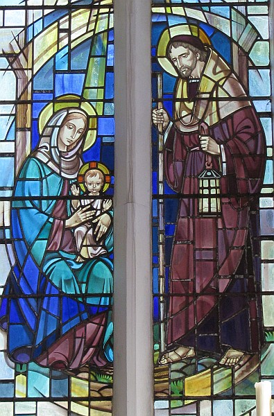

Saint Matchi, Chapitre 1, vèrsets 18-25

Devant la naissance de Jesu Christ, Marie sa méthe etant fiancée de Joseph, se trouvit enceinte par le vertu du Saint Esprit.
Joseph, son epoux, etant un homme de bein, et ayant une certaine ordgi, ne voulant pas exposer Marie publiquement, décidi d'la tchitter sécrétement, mais comme i penser envers sa décision, une ange du Seigneur s'appathit dans son rêve et li dit.
"Joseph, fils de David, n'ai pas d'peux d'prendre Marie pour ta femme, car ch'la tchi s'arrive a Marie est du Saint Esprit. Ou sont va s'enfantchi d'un fils et tu li donn'thas l'nom de JESUS, car chais li tchi sauv'tha son peuplye de lus péchés, et tout ch'la s'arriv'tha accordant du Seigneur ayant averti le prophete disant:
Une vierge setha enceinte, et ou'lle enfantera un fils et ou'lle nomm'tha EMMANUEL, tchi signifie, DIEU AVEC NOUS.
Joseph donc, ayant reveillyi d'son somme, fit comme l'ange du seigneur l'avait c'mmander, et donc i print Marie pour sa femme, Mais Joseph nu aûtchunne connaisance de sa femme devant qu'oulle avait donner naissance, et i li donnit l'nom JESUS.
Clifford Laisney
Vèrsets 18-25
Ch'est en tchi la naîssance dé Jésû l'Onguenné prînt pliaiche dé chutte manniéthe-chîn. Quand sa méthe Mathie avait 'té engagie à Joseph, mais d'vant qu'il' eûssent démeuthé ensembl'ye, nou trouvit qu'ou 'tait pouor porter un êfant du Saint Esprit. San bouonhoumme Joseph, un houmme raîsonnabl'ye tchi n'voulait pon l'ahonter en publyi, s'en d'mentait d'la renvyer auve discrétion. Mais qu'il eûsse décidé d'même, un m'sagi du Seigneu lî géthit dans un rêve et lî dit, "Joseph fis Dâvi, n'ânionne pon dé t'mathier à Mathie, ch'est en tchi l'êfant conchu dans sa bielle est du Saint Esprit. Ou portétha un fis, et tu lî bâdra l'nom Jésû, ch'est en tchi i' saûv'tha l'peupl'ye dé lus péchés."
Tout chennechîn prînt pliaiche à seule fîn d'ag'ver chein tch'avait 'té dit par l'Seigneu par l'prophète:
"Êvchîn, la vièrge conchétha et portétha un fis,
et nou lî bâdra l'nom Emmanuel,"
v'là tchi veurt dithe, "Dgieu est acanté nous."
Quand Joseph s'rêvilyit, i' fit d'même coumme lé m'sagi du Seigneu li'avait c'mandé: i' la mathyit, mais i' n'la griyit pon d'vant qu'ou portîsse un fis, et i' lî baillit l'nom Jésû.
Vèrsets 18-25
 Pouor d'la naîssance dé Jésû Chri, né v'chîn coumme tchi qu'ou s'adonnit: coumme Mathie sa méthe avait 'té fianchie à Joseph, ou s'trouvit encheinte, viyant qu'oulle avait conchu en lyi par l'pouvé du Saint Esprit, d'vant qu'il' eûssent 'té ensembl'ye.
Pouor d'la naîssance dé Jésû Chri, né v'chîn coumme tchi qu'ou s'adonnit: coumme Mathie sa méthe avait 'té fianchie à Joseph, ou s'trouvit encheinte, viyant qu'oulle avait conchu en lyi par l'pouvé du Saint Esprit, d'vant qu'il' eûssent 'té ensembl'ye.
Assa Joseph, sén houmme, 'tait juste et n'voulait pon l'êcliandrer et i' s'êcantit don d'la dêmathier en cache-muche. Mais coumme il y pensait, un m'sagi du Seigneu lî geuthit dans un rêve et lî dit, "Joseph fis Dâvi, n'ai pon d'peux d'prendre auve té Mathie ta femme, car l'chein tch'est né en lyi a 'té grée par l'Saint Esprit. Et ou mettra au monde un fis, à tchi tu donn'nas l'nom d'Jésû, chein tchi veurt dithe Saûveux - ch'est en tchi ché s'sa li tchi saûv'tha san peupl'ye et les libéth'tha d'lus péchés."
Êv'chîn tout chenna s'adonnit pouor accomplyi chein qu'lé Seigneu avait dit par l'prophète dé tchi né v'chîn les patholes: "Êv'chîn la vièrge conchév'tha et ou mettra au monde un fis à tchi nou donn'na l'nom d'Emmanuel, chein tchi veurt dithe Dgieu acanté nous."
Joseph don, un co rêvilyi, fit chein qu'lé m'sagi li'avait c'mandé et prînt sa femme auve li. Et i' n'avait pon appréchi d'lyi quand ou mînt au monde san preunmié-né, un fis à tchi i' donnit l'nom d'Jésû.
Viyiz étout:
- La Bibl'ye
- La Bouonne Nouvelle s'lon Matchi: chapitre 1, vèrsets 1-17
- L'Êvangile sélon St.-Matchi: chapitre 1, vèrsets 18-23 - des vèrsions
- La Bouonne Nouvelle s'lon Matchi: chapitre 2
- L'Êvangile sélon St.-Matchi: chapitre 2, vèrsets 1-11 - des vèrsions
- La Bouonne Nouvelle s'lon Matchi, Chapitre 2, vèrsets 12-17 - Lé Machacre des Înnouothants
- La Bouonne Nouvelle s'lon Matchi: chapitre 3
- La Bouonne Nouvelle s'lon Matchi: chapitre 4
- La Bouonne Nouvelle s'lon Matchi: chapitres 4-7 - Lé Sèrmon sus la Montangne
- La Bouonne Nouvelle s'lon Matchi: chapitre 8
- La Bouonne Nouvelle s'lon Matchi: chapitre 8, vèrsets 5-8
- La Bouonne Nouvelle s'lon Matchi: chapitre 9
- La Bouonne Nouvelle s'lon Matchi: chapitre 10
- La Bouonne Nouvelle s'lon Matchi: chapitre 11
- La Bouonne Nouvelle s'lon Matchi: chapitre 12
- La Bouonne Nouvelle s'lon Matchi: chapitre 13, vèrsets 3-9 - La Pathabole du S'meux
- La Bouonne Nouvelle s'lon Matchi: chapitre 13
- La Bouonne Nouvelle s'lon Matchi: chapitre 14
- La Bouonne Nouvelle s'lon Matchi: chapitre 15
- La Bouonne Nouvelle s'lon Matchi: chapitre 16
- La Bouonne Nouvelle s'lon Matchi: chapitre 17
- La Bouonne Nouvelle s'lon Matchi: chapitre 18
- La Bouonne Nouvelle s'lon Matchi: chapitre 19
- La Bouonne Nouvelle s'lon Matchi: chapitre 20
- La Bouonne Nouvelle s'lon Matchi: chapitre 21
- La Bouonne Nouvelle s'lon Matchi: chapitre 21, vèrsets 18-22 - Lé mithacl'ye du fidgi
- La Bouonne Nouvelle s'lon Matchi: chapitre 22
- La Bouonne Nouvelle s'lon Matchi: chapitre 23
- La Bouonne Nouvelle s'lon Matchi: chapitre 24
- La Bouonne Nouvelle s'lon Matchi: chapitre 25, vèrsets 1-13 - La Pathabole des dgiêx vièrges
- La Bouonne Nouvelle s'lon Matchi: chapitre 25, vèrsets 14-29 - La Pathabole des talents
- La Bouonne Nouvelle s'lon Matchi: chapitre 25, vèrsets 29-46
- La Bouonne Nouvelle s'lon Matchi: chapitre 26
- La Bouonne Nouvelle s'lon Matchi: chapitre 27
- La Bouonne Nouvelle s'lon Matchi: chapitre 28